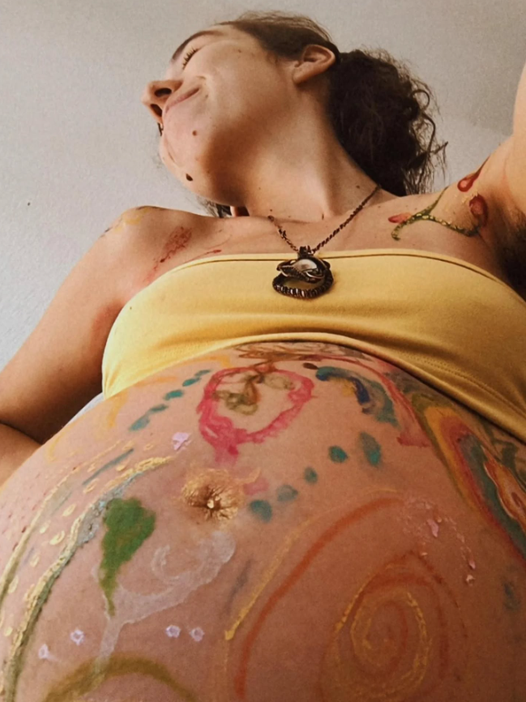
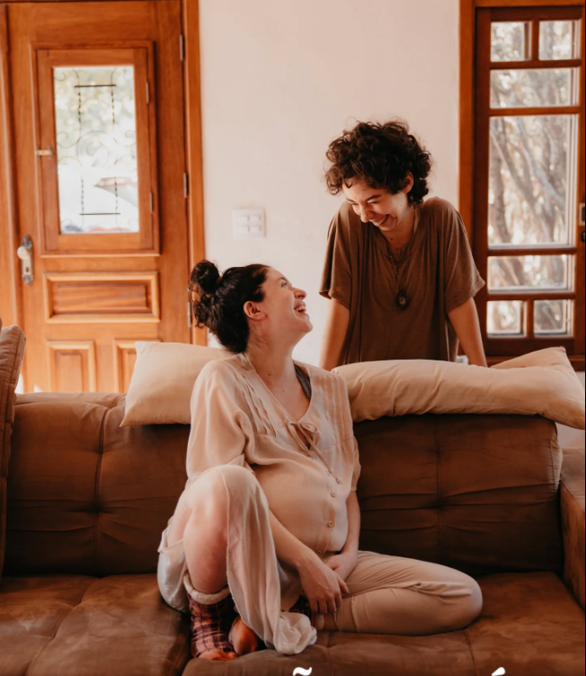

Educação Perinatal
Transforme a insegurança em confiança para viver o nascimento do seu bebê de forma consciente e tranquila. A Educação Perinatal é um acompanhamento completo que prepara a gestante e sua família para cada etapa da jornada: gravidez, parto, pós-parto e os primeiros cuidados com o recém-nascido. Mais do que aprender técnicas, você entenderá o que acontece com o seu corpo, conhecerá seus direitos e receberá orientações baseadas em evidências para tomar decisões com segurança. O que você aprende? 🤰 As transformações físicas e emocionais da gestação. 🫂 Como reconhecer os sinais do trabalho de parto. 🌸 Métodos naturais para aliviar a dor durante o parto. 📋 Elaboração do plano de parto. ⚖️ Direitos da gestante e da família. 🤱 Início da amamentação e seus primeiros desafios. 👶 Cuidados essenciais com o recém-nascido. 💛 Recuperação física e emocional no pós-parto. 👨👩👦 Como envolver o parceiro e a família nesse momento.
arrow_back Voltar aos Serviços
Acompanhamento do Parto
O nascimento do seu bebê é um momento único e merece ser vivido com serenidade, segurança e acolhimento. Durante todo o trabalho de parto, estarei ao seu lado oferecendo suporte físico e emocional, utilizando técnicas naturais para promover conforto e aliviar a dor, como massagens, exercícios respiratórios, movimentos livres, posições favorecedoras e relaxamento guiado. Cada cuidado é pensado para que você se sinta respeitada, fortalecida e protagonista do seu parto, transformando esse dia em uma experiência inesquecível, vivida com amor, confiança e conexão
arrow_back Voltar aos Serviços
Registro de Parto
Ofereço um serviço de registro de parto que documenta todo o processo, desde a preparação até o nascimento do bebê. Este registro serve como um memento valioso da sua experiência de parto, permitindo que você compartilhe e preserve os momentos mais significativos com sua família e amigos.
arrow_back Voltar aos Serviços
Encapsulamento da Placenta
A placenta acompanhou seu bebê durante toda a gestação, fornecendo proteção e nutrientes essenciais. Para muitas mães, ela representa muito mais do que um órgão: simboliza a força, a conexão e a transformação vividas ao longo dessa jornada. O encapsulamento da placenta é uma prática realizada em diferentes culturas há muitos anos e vem sendo escolhida por mulheres que desejam incluir esse cuidado em seu período de recuperação. Muitas mães compartilham que se sentiram mais dispostas, emocionalmente equilibradas e amparadas durante o pós-parto ao optar pelas cápsulas de placenta. Cada experiência é única, e os resultados podem variar de mulher para mulher. Todo o processo é realizado com atenção aos cuidados de higiene e manipulação, respeitando protocolos para que sua placenta seja preparada exclusivamente para você. Se você deseja conhecer melhor essa prática e entender como funciona o processo de encapsulamento, ficarei feliz em esclarecer suas dúvidas e acompanhar sua decisão com carinho e respeito.
arrow_back Voltar aos Serviços
Cuidados com o RN
🍼 Orientação sobre amamentação e alimentação do bebê. 🛁 Demonstração do banho seguro e cuidados com a higiene. 👕 Troca de fraldas e prevenção de assaduras. 😴 Organização da rotina de sono e descanso. 🌡️ Cuidados com o umbigo até a cicatrização. 🤍 Identificação de sinais de alerta que exigem avaliação médica. 🌿 Técnicas para aliviar cólicas e proporcionar conforto ao bebê. 🤲 Manejo correto do recém-nascido (como segurar, posicionar e acalmar). 🏠 Orientação para adaptar o ambiente 👨👩👦 Apoio e treinamento para pais e familiares nos primeiros dias.
arrow_back Voltar aos Serviços
Joia de placenta
Uma joia que guarda o início de uma vida Há momentos que mudam quem somos para sempre. O nascimento de um filho é um deles. Durante meses, a placenta foi a primeira casa do seu bebê. Foi ela quem o protegeu, alimentou e acompanhou cada pequeno instante do seu desenvolvimento. Depois do parto, sua missão termina, mas sua história não precisa acabar ali. Transformar uma pequena parte da placenta em uma joia é uma maneira delicada e cheia de significado de preservar essa lembrança para sempre. Mais do que um acessório, é um símbolo da força, da entrega e do amor que marcaram o começo da maternidade. Cada peça é feita artesanalmente, com respeito e cuidado, tornando-se única, assim como a história de cada mãe e de cada bebê. Nenhuma joia é igual à outra, porque nenhuma jornada é igual à outra. Seja um pingente, um anel ou um colar, essa lembrança acompanhará você muito além dos primeiros meses. Será um pedaço da sua história, para tocar, olhar e recordar sempre que desejar. Porque algumas memórias merecem ser vividas todos os dias — e outras merecem ser eternizadas..
arrow_back Voltar aos Serviços